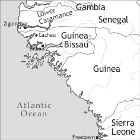
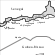

by Noël Bernard Biagui and Nicolas Quint


Casamancese Creole (autoglossonym: kriyol or liŋgu kristoŋ ‘Christian language’) is spoken in the Senegalese Province of Lower Casamance (in French: Basse-Casamance) in some districts of the city of Ziguinchor (mainly Santhiaba, Boucotte-Corentas, Boudody, Escale, Kandé, and Néma) and in some surrounding villages, (1) Eastwards: Boutout, Djifanghor, Niaguis, Fanda, Agnack, Sindone, Adéane, Koundioundou, (2) Westwards: Djibonker, Brin, (3) Southwards: Mpak. Although most sources, generally based on Châtaigner (1963: 54), give a figure of over 50,000 speakers (which may well have been accurate in the 1960s, see §3 below), this number is probably much lower today. According to our own estimate, the number of native speakers does not exceed 10,000, but the total number of fluent speakers could be much higher (perhaps 20,000 people or more), as several Casamancese ethnic groups (mostly Nyuns, but also Manjakus and Mankanyas) still use Casamancese Creole as a lingua franca among [Catholic] Christians (hence the autoglossonym liŋgu kristoŋ ‘Christian language’ of Casamancese Creole). Many Casamancese Creole speakers are living in other regions of Senegal. The area of Dakar is home to the most important community (ca. 2,500 speakers). Most Casamancese Creole speakers are also fluent in Wolof (the most important lingua franca in Senegal) or can speak it reasonably well; many have a fairly good knowledge of French (the official language of Senegal, also used in Catholic church services); and a fair number are proficient in one or several other African languages (mostly Nyun, Jola, Manding, Mankanya, or Manjaku). In terms of genealogical affiliation, Casamancese Creole is a member of the Upper Guinea Creoles group, which also includes Cape Verdean Creole, Papiamentu,1 and Guinea-Bissau Kriyol. The latter is closely related to Casamancese Creole , and there is a high degree of mutual intelligibility (see Intumbo et al. 2012, in this volume; these authors regard Casamancese Creole as a dialect of Guinea-Bissau Kriyol). Within Upper Guinea Creoles, Casamancese Creole makes up, together with Guinea-Bissau Kriyol and the extinct varieties of the Senegalese “Petite Côte” (Joal, and probably also Portudal (Saly) and Rufisque), the subgroup of continental Upper Guinea Creoles. Note that the southern Senegalese Province of Casamance is also home to a sizeable number of Guinea-Bissau Kriyol speakers (several thousand at least), who can be found in places such as the Tilène district of Ziguinchor and the city of Goudomp. Most of these are people who have have moved to Senegal from Guinea-Bissau since the 1950s.
Contacts between the Portuguese and West Africans began shortly after the former had circumnavigated Cape Bojador in 1423; as a result of these contacts a Portuguese pidgin probably soon arose, and this in turn was nativized as a creole both in the Archipelago of Cape Verde and in several places of the captainship of Cape Verde area (Quint 2008: 21), i.e. the portion of the African coast extending from the mouth of the Senegal river to the peninsula of Freetown (Sierra Leone).
In 1588, the Portuguese founded the city of Cacheu in the Northern region of present-day Guinea-Bissau. In 1645, a first group of settlers (which probably included Portuguese Creole speakers) coming from Cacheu founded the city of Ziguinchor at a site originally belonging to a Nyun clan (Roche 1976: 23–5). This event can be seen as the beginning of Casamancese Creole. In 1886, the Portuguese handed over Ziguinchor to the French in exchange for other territories. Therefore, since that date, Casamancese Creole has developed independently from the influence of Portuguese, in contrast to the remaining continental Upper Guinea Creole contemporary varieties, all spoken in Guinea-Bissau.
Most African-derived items existing in Capeverdean Creole of Santiago (see Quint 2008) are also found in Casamancese Creole as well as in Guinea-Bissau Kriyol, which means that Casamancese Creole shares a common African substrate (mostly Manding and Wolof) with other Upper Guinea Creoles. However, Casamancese Creole also has various non-Portuguese elements of its own, due to prolonged contact with adstrate languages spoken in Casamance, mainly Nyun, and also Manding and Jola.
The first documentations of Casamancese Creole are probably those of Emmanuel Bertrand-Bocandé (1849), a French resident in Carabane (at the mouth of the Casamance river), and Hugo Schuchardt (1888). Then, in the first half of the 20th century, several catechisms were written in Casamancese Creole (e.g. Esvan 1922, 1951), which was at that time an important lingua franca in Lower Casamance. Other important sources for the study of the language are Châtaignier (1963), Dalphinis (1981), Alkmim (1983), Doneux & Rougé (1988), and Rougé (1985, 1988). Noël Bernard Biagui is responsible for producing the first comprehensive grammatical and lexical description of the language (Biagui 2012).
Since its very beginning (i.e. the foundation of Ziguinchor in 1645), Casamancese Creole has been the favoured language of Catholic Africans and in particular those belonging to one specific ethnic group, the Nyuns, living mostly in Lower Casamance and northern Guinea-Bissau. The Nyuns seem to have developed close contacts with the Portuguese very quickly; as early as 1594 (i.e. only six years after the foundation of Cacheu, in a region where Nyuns were found in large numbers), d’Almada mentions estes negros banhus ‘these Nyun Blacks’ who live among Portuguese people como se fossem nados he criados entre nós (‘as if they had been borne and raised among us’, i.e. the Portuguese). The promptness with which Nyuns welcomed Portuguese influence could possibly be due, at least partly, to the fact that the members of this community were in need of a strong ally to counterbalance the competition of more powerful Mandings and Jolas, who were continuously (and still are) encroaching on Nyun territory.
Today, the Nyuns still make up the majority of Casamancese Creole native speakers, and all the localities – including Ziguinchor – where Casamancese Creole is actively spoken as a first or second language are (or were) inhabited by a majority of ethnic Nyuns. Even where Casamancese Creole replaced the Nyun language long ago in daily life (as happened in Sindone and among Ziguinchor Casamancese Creole speakers), people still retain their ethnic identity and maintain the traditional ceremonies and customs (initiation, folk dances, food avoidances, etc.) of the Nyuns. Non-Nyun Casamancese Creole native speakers also retain their ethnic identity, as is the case for the two pockets of Casamancese Creole-speaking ethnic Jolas, who can be found in Niaguis and Adéane respectively. In other words: Although Casamancese Creole is the first language of more than 10,000 people, its speakers do not consider themselves as members of any specific “Creole” ethnic group.
Until the beginning of the 1960s (Chataignier 1963: 53), Casamancese Creole was the main lingua franca in the port and markets of the city of Ziguinchor; it therefore enjoyed a high prestige status and the number of speakers increased regularly. In the following years, due to Senegal’s independence and the continuous inflow of northern Senegalese Wolof-speaking civil servants and merchants, Wolof replaced Casamancese Creole as the main business language in Ziguinchor. Casamancese Creole, however, retained its religious prestige and remains to date one of the main languages used in Catholic churches in Ziguinchor and the surrounding areas.
Today, however, Casamancese Creole is clearly receding; this is due to the competition with Wolof (in particular in the Ziguinchor urban area) and Manding (in the eastern part of the Casamancese Creole-speaking area, e.g. Koundioundou and also Sindone). Nevertheless, in some native Casamancese Creole-speaking communities (e.g. Christian sections of Niaguis and Sindone), Casamancese Creole is still being passed on to children and is even acquired by newcomers, particularly in Sindone. Conversely, conversions of Casamancese Creole speakers to Islam often lead to language shift, in particular from Casamancese Creole to Manding.
Casamancese Creole has a system of eight oral vowel phonemes, without nasal counterparts. There are some phenomena of vowel lengthening, but these can be shown to be stress-dependent (see below). /ɛ, ɐ, ɔ/ are rare (found in less than 1% of the lexical items each) and generally (/ɛ, ɔ/) or exclusively (/ɐ/) found in words of African (non-Portuguese) stock: lɔpɛ́2 ‘swaddling clothes’, jiŋɐŋ ‘ghost sp.’, jɔtɔ́ ‘fish sp.’
|
Table 1. Vowels |
|||
|
front |
central |
back |
|
|
close |
i |
u |
|
|
close-mid |
e |
o |
|
|
open-mid |
ɛ |
ɐ |
ɔ |
|
open |
a |
||
There are 29 consonants in Casamancese Creole. Prenasalized plosives can appear in all positions, in particular (1) after a consonant inside the word: dismburjá ‘unpack’, segurndadi ‘blindness’ and (2) in absolute final position (African-derived items only): suduŋk ‘bird sp.’. /v, z, ʃ/ are only found in recent borrowings from Portuguese (or lusitanized Guinea-Bissau Kriyol) or French: voté ‘vote (v.)’ (< French voter), zeró ‘zero’ (< French zéro), bixa ['biʃa] ‘queue (n.)’ (< Portuguese bicha). In initial position, the combination of first person singular pronoun N and some verbs can give rise to a syllabic nasal: N ntendé [n̥ nte'nde] ‘I understood’. Consonant clusters are common: flor ‘flower’, presu ‘price’.
Casamancese Creole is a stress language. Each content word has a stressed syllable (signalled in bold in the following), and this can occupy three different positions, i.e. (1) final: kortá [kor'ta] ‘cut (v.)’, (2) penultimate: kargu ['kargu] ‘luggage’, (3) antepenultimate: lárguma ['larguma] ‘tear (n.)’. Stress has a distinctive function: konta ['konta] ‘(pearl) necklace’ vs. kontá [ko'nta] ‘tell’. When the stress is on an open (i.e. onset + V) penultimate syllable, the stressed vowel is noticeably lengthened: sibi ['si:bi] ‘African fan palm, Borassus aethiopium’ vs. sibí [si'bi] ‘go up’. However, in pairs such as sibi vs. sibí, the length contrast can be shown to be only a phonetic phenomenon under the strict dependence of stress (see the konta vs. kontá pair above, where there is stress contrast but no length contrast); it follows from this that vowel length has no functional load in Casamancese Creole.
There are 10 syllabic patterns in Casamancese Creole, the most common of which is CV (67%3): kasa CV-CV ‘house’. Consonantal onsets can occupy up to 3 segmental positions4: mbruju CCCV-CV ‘bundle (of clothes)’, strada, CCCV-CV ‘road’. Vocalic onsets are rare (5%): es ‘this one’. Although zero coda is the preferred option (78%), various consonant codas are allowed: pálum CV-CVC ‘palm (hand)’, miñjer, CV-CCVC, ‘woman’.
|
Table 2. Consonants5 |
|||||||
|
bilabial |
labio-dental |
labio-velar |
alveolar |
palatal |
velar |
||
|
plosive |
voiceless |
p |
t |
c |
k |
||
|
voiced |
b |
d |
ɟ <j> |
g |
|||
|
prenasalized plosive |
voiceless |
mp |
nt |
ɲc <ñc> |
ŋk |
||
|
voiced |
mb |
nd |
ɲɟ <ñj> |
ŋg |
|||
|
nasal |
m |
n |
ɲ <ñ> |
ŋ |
|||
|
trill |
r |
||||||
|
fricative |
voiceless |
f |
s |
(ʃ) <x> |
|||
|
voiced |
(v) |
(z) |
|||||
|
lateral |
l |
||||||
|
glide |
w |
j <y> |
|||||
The expression of gender is limited to natural gender and can be done (1) lexically (ca. 10 instances): womi ‘man’ vs. miñjer ‘woman’; (2) synthetically (less than 10 instances, all encoding human beings), in which case the feminine ending always includes -/a/: primu ‘(male) cousin’ vs. prima ‘(female) cousin’; (3) analytically (the most common option) by means of macu ‘male’ and fémiya ‘female’: fiju macu ‘son (= male child)’ vs. fiju fémiya ‘daughter (=female child)’. Gender agreement with the noun is limited to two adjectives only: beju ‘old’, and dudu ‘crazy’: uŋ womi dudu ‘a crazy man’ vs. un miñjer duda ‘a crazy woman’.
There is a suffixed number marker with three allomorphs: (1) -s for nouns ending in an unstressed vowel: womi ‘man’ > womis ‘men’; (2) -wus for those ending in a stressed vowel: debí ‘bedbug’ > debiwus ‘bedbugs’ and (3) -us for those ending in a consonant: lébur ‘hare’ > léburus ‘hares’. There is no number agreement. Usually, in a plural noun phrase, the noun is the bearer of the plural marker:
(1) Kel bajuda-s kabriyanu Ø bonitu suma yagu.
dem girl-pl Capeverdean pfv (be.)pretty as water
‘Those Capeverdean girls would make a pretty picture (lit.: are pretty like water).’
For proper nouns only, there is an associative plural prefix ba-, which combines obligatorily with the plural suffix: ba-Pidru-s ‘Peter and his friends’.
Noun derivation is common and involves approximately 20 different suffixes (four of which are still productive). Examples are pádur ‘priest’ > padurndadi ‘priesthood’ (noun to noun); ardá ‘inherit’ > ardansa ‘inheritance’ (verb to noun); and largu ‘wide’ > larguda ‘width’ (adjective to noun).
There is no definite article; the indefinite article uŋ ‘a’ precedes the noun and is different from the numeral uŋ-soŋ ‘one’.
Adnominal demonstratives precede the noun. They express a double contrast: (1) discourse reference: e kacor ‘this dog (nearby + visible)’ vs. kel kacor ‘that (previously mentioned + non-visible)’; (2) spatial deixis: e kacor-li ‘this dog (nearby)’ vs. e kacor-la/ke(l) kacor-la ‘that dog (over there)’.
The corresponding pronominal demonstratives are (1) es (pl. esus) ‘this one’ vs. kel-la ‘that one’ (pl. kel-lawus) for discourse reference and (2) es-li (pl. esus-li) ‘this one’ vs. es-la (pl. esus-la)/kel-la (pl. kelus-la) ‘that one’ for spatial deixis.
Possessives are dealt with together with personal pronouns (see Table 4).
All numerals are Portuguese-derived and precede the noun.
1 uŋ-soŋ 2 dos 3 tres 4 kwátur 5 siŋku
6 sis 7 seti 8 witu 9 nobi 10 des
The teen numbers are produced regularly: 11 = dés ku uŋ-soŋ, ‘ten and one’, 12 = dés ku dos ‘ten and two’, etc. The names for tens are the following: binti (20), trinta (30), korenta (40), siŋkwenta (50), sesenta (60), setenta (70), oytenta (80), nobenta (90), sentu (100).
There is only one synthetic ordinal: purmedu ‘first’; all the remaining ones follow the pattern “di + cardinal”: di dos ‘second’, di tres ‘third’, etc.
Most adjectives are invariant and follow the noun (see kabriyanu in (1) above). The comparison of adjectives is described in Table 3.
|
Table 3. Comparison of adjective (S = subject, A = adjective, X = standard) |
||
|
type |
construction |
example |
|
comparative of equality |
S A suma X |
Pidru altu suma Joŋ. Peter tall like John Peter is as tall as John. |
|
comparative of superiority |
S ma(s) X A |
Pidru ma(s) Joŋ altu. Peter more John tall Peter is taller than John. |
|
S ma(s) di ki X A |
Pidru ma(s) di ki Joŋ altu. Peter more than John tall Peter is taller than John. |
|
|
S ma(s) A di ki X |
Pidru ma(s) altu di ki Joŋ. Peter more tall than John Peter is taller than John. |
|
|
absolute superlative |
S mutu/pasá A |
Pidru mutu altu. Peter very tall Peter (is) very tall. |
|
S A dimás/pasá/tɔk |
Pidru altu tɔk. Peter tall very Peter is very tall. |
|
|
relative superlative |
S ma(s) tudu X A |
Pidru ma(s) si yermoŋus tudu altu. Peter more his brothers all tall Peter is the tallest of (all) his brothers. |
|
S ma(s) X tudu A |
||
|
S ma(s) A na X tudu |
Na si yermoŋus tudu Pidru ma(s) altu. in his brothers all Peter more tall Peter is the tallest of (all) his brothers. |
|
|
na X tudu S má(s) A |
||
Genitive constructions follow the pattern “possessum di possessor”: kasa di Pidru [house of Peter] ‘Peter’s house’.
There are four series of personal pronouns and two series of possessives.
|
Table 4. Personal pronouns and possessives |
||||||
|
pronouns |
possessives |
|||||
person |
subject |
object |
independent |
topic |
prenominal |
postnominal |
|
1sg |
N |
-m [m] |
mi |
a-mi |
ña |
di mi |
|
2sg |
bu |
-bu |
bo |
a-bo |
bu |
di bo |
|
3sg |
i |
-l |
yel yel |
si |
di sol |
|
|
1pl |
no |
-nos / -nu |
nos |
a-nos |
no |
di nos |
|
2pl |
bo |
-bos ['bos] |
bos |
a-bos |
bo |
di bos |
|
3pl |
e |
-elus/-lus |
yelus yelus |
se |
di solus |
|
Subject and object pronouns are differentiated for all persons but one (second singular). For the first person plural, the objects forms -nu and -nos alternate freely. The form -elus ['elus] (third plural object) combines only with verbs with an -á ending: N wojá ‘I saw’ > N woj-elus ‘I saw them’, whereas -lus combines with the remaining verbs: N wobí ‘I heard’ > N wobí-lus ‘I heard them’.
Subject pronouns are obligatory, even with expletive (semantically empty) subjects:
All object pronouns are directly attached to the verb and all but two (-elus and -bos) are unstressed clitics.
Independent pronouns regularly combine with prepositions: ku mi ‘with me’; and are also used as second-rank (non-clitic) object pronouns in double object constructions:
(3) Dewus ki Ø dá-m bo.
God rel.sbj pfv give-1sg.obj 2sg.indp
‘It’s God who brought you to me as a present (to a cherished person)’ (literally ‘who gave me you’).
When the independent pronouns follow the preposition pa ‘for/by’, the resulting combinations are slightly irregular for the third person: pa mi ‘for me’ but par-el ‘for him/her’, par-elus ‘for them’.
Topic pronouns are characterized by the element a- (for all persons but the third persons). They mainly appear clause-initially and are always reinforced by a subject pronoun:
(4) A-mi N ka Ø sebé.
1sg.top 1sg.sbj neg pfv know
‘I do not know.’6
Prenominal possessives are always adnominal: ña kasa ‘my house’. Postnominal possessives may be either (1) adnominal: tera di bo [country of you] ‘your country’ or (2) pronominal: e tera i di bo [this country is of you] ‘this country is yours’. Although postnominal possessives partly derive from the independent series preceded by di ‘of’, there is a formal distinction for the third persons: di sol(us) is the only possible form for the possessive, whereas both di yel(us) and di sol(us) are attested (according to speakers and communities) in non-possessive use: no papiyá di yelus = no papiyá di solus ‘we spoke about them’.
Intensifier pronouns are formed with independent pronouns + me/propi ‘really’: mi-me/mi-propi ‘myself’, bo-me/bo-propi ‘yourself’, etc.
Nearly all Casamancese Creole verbs are characterized by a final, thematic vowel, often inherited from Portuguese, (1) /a, e, i/ in most cases: kontá ‘tell’, kumé ‘eat’, durmí ‘sleep (v.)’; (2) more rarely (mostly items of African stock) /o, u/: joŋgó ‘doze’, bambú ‘carry on one’s back’.
Casamancese Creole marks aspect and tense on verbs by means of four unbound basic particles, as shown in Table 5.
|
Table 5. Basic aspect-mood-tense markers |
|||
|
type |
particle |
label |
position |
|
aspect |
Ø |
perfective |
preverbal |
|
ta |
habitual |
preverbal |
|
|
na |
imperfective7 |
preverbal |
|
|
tense |
baŋ |
past |
postverbal |
Casamancese Creole verbs belong to two different aspectual classes: (1) dynamic verbs (e.g. bebé ‘drink’), which have past reference when preceded by the perfective marker Ø: N Ø bebé ‘I drank’; (2) stative verbs (e.g. sebé ‘know’), which have present reference when preceded by the perfective marker Ø: N Ø sebé ‘I know’.
As shown in Table 6, the actual meanings of the aspect markers may differ according to the stative or dynamic character of the verb, and the same applies to aspect-tense combinations.
|
Table 6. Meanings of aspect and tense markers according to the aspectual class of the verb |
|||||
|
aspect |
tense |
asp. class |
meaning |
example |
translation |
|
Ø |
unmarked |
dynamic |
perfective past |
N Ø bebé |
‘I drank’ |
|
stative |
present tense |
N Ø sebé |
‘I know’ |
||
|
ta |
unmarked |
dynamic |
habitual present |
N ta bebé |
‘I drink’ |
|
stative |
unattested |
unattested |
- |
||
|
na |
unmarked |
dynamic |
present progressive, future |
N na bebé |
‘I am drinking, I will drink’ |
|
stative |
future |
N na sebé |
‘I will know’ |
||
|
Ø |
baŋ |
dynamic |
pluperfect |
N Ø bebé baŋ |
‘I had drunk’ |
|
stative |
imperfective past |
N Ø sebé baŋ |
‘I knew’ |
||
|
ta |
baŋ |
dynamic |
habitual past |
N ta bebé baŋ |
‘I used to drink’ |
|
stative |
unattested |
unattested |
- |
||
|
na |
baŋ |
dynamic |
past progressive, counterfactual |
N na bebé baŋ |
‘I was drinking, I would drink, I would have drunk’ |
|
stative |
counterfactual |
N na sebé baŋ |
‘I would know’ |
||
The tense marker baŋ seems to be derived both from (1) Portuguese -va, suffix of imperfect indicative of the first conjugation (cantar-type) and (2) African ad-/substrates; cf. Mandinka báŋ, Jola Fogny ban, Manjaku ba, all meaning ‘finish’. In double object constructions, baŋ is inserted between the first and second objects (whether they are pronominal or not):
(5) a. N Ø dá=bu baŋ yel.
1sg.sbj pfv give=2sg.obj pst 3sg.indp
‘I had given you it.’
b. N Ø dá Pidru baŋ kóbur.
1sg.sbj pfv give Peter pst money
‘I had given Peter (some) money.’
Modality and some other aspectual values are expressed by several adverbs (less grammaticalized than the tense-aspect particles) and semi-auxiliary verbs, which are summarized in Table 7.
|
Table 7. Other modality and aspect markers |
|||||
|
type |
particle |
meaning |
position |
example |
translation |
|
adverb |
jaŋ |
completive |
postverbal |
i beŋ jaŋ |
‘he has (already) come, here he is!’ |
|
na |
assertive |
postverbal |
i beŋ na |
‘he came (indeed), he did come’ |
|
|
yar/nos |
epistemic possibility |
preverbal |
i yar beŋ/yar i beŋ |
‘he may/might have come, perhaps he has come’ |
|
|
verb |
podé |
epistemic possibility; ability |
preverbal |
i podé beŋ |
‘he may/might come; he is able to come’ |
|
mesté |
volition |
preverbal |
i mesté beŋ |
‘he wants to come’ |
|
|
pirsisá di |
necessity |
preverbal |
i pirsisá di beŋ |
‘he needs to come’ |
|
|
debé di |
obligation; deontic |
preverbal |
i debé beŋ |
‘he must/has to come; he should come’ |
|
|
teŋ ku/teŋ di |
obligation |
preverbal |
i teŋ ku beŋ |
‘he must come’ |
|
Passive voice is marked by the bound suffix -du: kantá ‘sing’ > kantadu ‘be sung’, kumé ‘eat’ > kumedu ‘be eaten’. The agent is never overt.
(6) a. Joŋ Ø dá Pidru silafanda.
John pfv give Peter present
‘John gave Peter a present.’ [active]
b. Pidru Ø da-du silafanda.
Peter pfv give-pass present
‘Peter was given a present.’ [passive]
Verb derivation is productive and resorts to different morphological devices; e.g. (1) suffixation: pretu ‘black’ > pretusé ‘become black’ (inchoative, adjective to verb); faka ‘knife’ > fakiyá ‘stab’ (noun to verb); (2) prefixation: mará ‘tie (v.)’ > dismará ‘untie’ (inversive, verb to verb); (3) reduplication: capá ‘patch/repair (v.)’ > capá-capá ‘patch in several places’.
Causative is the most common verb extension in Casamancese Creole (attested for more than 50% of basic verbs). It is marked with a compound suffix of the type -Vt-nt-Vt (Vt = thematic vowel) and systematically triggers an increase of the valency of the verb by one unit: disí ‘come/go down (intransitive)’ > disintí ‘bring/get/take down (transitive)’, kumé ‘eat something (transitive)’ > kumenté ‘make someone eat something (ditransitive)’.
Verb negation is regularly marked by ka, inserted between the subject and the aspect marker (see however the special case of prohibitive below):
(7) a. Joŋ na bay Sicor.
John fut go Ziguinchor
‘John will go to Ziguinchor.’ [positive]
b. Joŋ ka na bay Sicor.
John neg fut go Ziguinchor
‘John will not go to Ziguinchor.’ [negated]
The paradigm of the imperative and prohibitive of the verb bay ‘go’ is set out in Table 8. This is applicable to all Casamancese Creole verbs.
|
Table 8. Imperative and prohibitive of the Casamancese Creole verb bay ‘go’8 |
||||
|
person |
imperative |
translation |
prohibitive |
translation |
|
2sg |
bay! |
‘go!’ |
ka bu bay! |
‘don’t go!’ |
|
1pl |
no bay! |
‘let’s go’ |
ka no bay! |
‘let’s not go!’ |
|
2pl |
bo bay! |
‘go (you all)!’ |
ka bo bay! |
‘don’t go (you all)!’ |
Most adjectives share some morphosyntactic properties of verbs. In particular, they can combine with tense-aspect markers:
(8) E mañjoka Ø fresku, ka na pódur lestu.
dem cassava pfv (be.)fresh neg fut (be.)rotten quickly
‘This cassava is fresh, it won’t go rotten soon’.
As shown in (8), adjectives, when inflected for perfective (Ø marker) have present-time reference and therefore can be considered to be closest to stative verbs.
Two main predicative copulas are attested: i, which has a purely equative/descriptive meaning, and sá, which has a resultative meaning.
Predicative noun phrases are always introduced by a copula (either i or sá):
(9) a. Joŋ Ø i piskador.
John pfv cop fisherman
‘John is a fisherman.’
b. Joŋ Ø sá piskador.
John pfv cop fisherman
‘John is (now) a fisherman (he used to have another job).’
Predicative adjectives can be optionally introduced by a copula (either i or sá):
(10) a. Joŋ Ø i beju.
John pfv cop old
‘John is old.’
b. Joŋ Ø sá beju.
John pfv cop old
‘John looks older (because he doesn’t take care of himself, drinks too much...).’
Predicative locative noun phrases are always introduced by sá.
(11) Joŋ Ø sá na Sicor.
John pfv cop in Ziguinchor
‘John is in Ziguinchor.’
Casamancese Creole is a strict SVO language; both subject and direct object are unmarked for case, and their relative position to the verb is the only way to retrieve their function. In double object constructions, either the recipient (R) or the theme (T) can immediately follow the verb. When the recipient follows the theme (see (12b)), it can be marked optionally by the preposition pa ‘for’:
Reflexive is expressed through the pattern (poss) + kabisa ‘head’ or (poss) + kurpu ‘body’.
(13) Joŋ Ø matá (si) kabisa.
John pfv kill poss.3sg head
‘John committed suicide/killed himself.’ (Lit. ‘John killed [his] head’.)
(14) Joŋ Ø labá (si) kurpu.
John pfv wash poss.3sg body
‘John had a bath / washed himself.’ (Lit. ‘John washed [his] body’.)
For reciprocal constructions, Casamancese Creole resorts to the pronoun ŋútur (< uŋ ‘a’ + wútur ‘other’) ‘each other/one another’.
(15) E Ø keré ŋútur.
3pl.sbj pfv love each.other
‘They love each other.’
Casamancese Creole has three sentence particles: Nos (presubjectal) is a question particle (see example 16 below), de (sentence-final) has an exclamative/assertive value, and me (postverbal or sentence-final) can either introduce a question requiring a specific validation or validate the assertive answer to this question.
Neutral yes-no questions are optionally introduced by nos:
(16) Nos i na beŋ li awosi?
q 3sg.sbj fut come here today
‘Will he come here today?’
The most common question words are keŋ ‘who’, kisá ‘what’, kal ‘which’, kumá ‘how’, nundé ‘where’, pabiya ‘why’, and (na) kal wora/diya/mis/anu/tempu [(at) which hour/day/month/year/time] ‘when’. Interrogative words always occur at the beginning of the sentence and are followed by the object relative ku:
(17) Kumá ku bu na tesé-l?
how rel.nsbj 2sg.sbj fut bring-3sg.obj
‘How will you bring it?’
Focus constructions follow the pattern “copula i (optional) + focus + relative pronoun”:
The main Casamancese Creole clause coordinating conjunctions are ma ‘but’, niŋ ‘nor’, pabiya ‘because’, and wo ‘or’. For additive clause coordination, Casamancese Creole resorts exclusively to juxtaposition, as there is no overt additive conjunction at clause level (contrasting with ku ‘and/with’, used for additive coordination of noun phrases):
(19) N Ø yentrá, N Ø pañá turpesa, N Ø sintá.
1sg.sbj pfv come.in 1sg.sbj pfv take stool 1sg.sbj pfv sit.down
‘I came in, took a stool and sat down.’ [sucession]
(20) I na rí, i na corá.
3sg.sbj prog laugh 3sg.sbj prog cry
‘He’s laughing and crying (at the same time).’ [simultaneity]
Complement clauses are generally introduced either by kumá (declaratives) or nti/pa (volitives):
(21) Mariya Ø falá kumá Joŋ Ø beŋ.
John pfv say comp John pfv come
‘Mary said that John had/has come.’ [declarative]
(22) Mariya Ø mesté nti Joŋ Ø beŋ.
Mary pfv want comp John pfv come
‘Mary wants John to come.’ [volitive]
Other common subordinating conjunctions are antu ku/antu pa/antu di ‘before’, kontrá/wora ku ‘when (past)’, ma nuŋku, ‘even if’, si ‘if’, soŋ si/te menu, ‘unless’, and wora di/wora pa ‘when (future)’.
Relative clauses follow the head noun. They are introduced by the relative markers ki (subject) and ku (non-subject).
(23) Kel miñjer ki Ø beŋ awonti ka Ø konsé-m.
dem woman rel.sbj pfv come yesterday neg pfv know-1sg.obj
‘The woman who came yesterday does not know me.’
When the relativized element is a prepositional noun phrase, the relative subordinate clause follows the pattern “ku + noun phrase + preposition + resumptive pronoun”:
Casamancese Creole has more than 50 intensive adverbs, here referred to as ideophones. Each of these ideophones is exclusively attached to one (or a few) adjective(s) or verb(s), whose expressive power is intensified by the ideophone:
(26) E biñu Ø melá cut.
dem wine pfv (be.)sweet ideo
‘This palm-wine is very sweet.’
(27) I Ø negá lot bay.
3sg.sbj pfv refuse ideo go
‘He adamantly refused to go (there).’
(28) Bu wuju Ø pretu na nɔk.
poss.2sg eye pfv (be.)black ass ideo
‘Your eyes are as black as coal.’